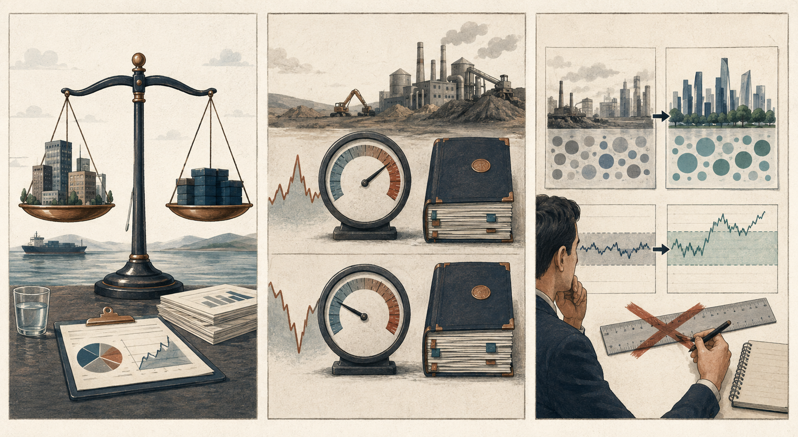

SH000905
持有中证500
PE / 10年分位32.72 / 78%
PB / 10年分位2.37 / 79%
当前 PE 位于近10年历史的 78.2% 分位，命中“持有”区间。
来源：雪球基金（近10年历史样本，项目本地重算分位）
2026年9月7日为星期一。上交所、深交所交易规则明确周一至周五为交易日；今日为A股交易日。美国市场当日为劳工节休市，四个指数的最近已完成交易日均为2026年9月4日。
估值方法要与指数的盈利、资产和流动性特征匹配；低PE、低PB或低历史分位都不是脱离口径的通用结论。
把四个“持有”信号记入既定清单，不据此交易。在估值记录旁保留PE、PB的口径、数据日期和适用条件，便于后续核对。
不要把“持有”解读为市场已经安全，也不要因金融机构补充资本就推断信贷、利润或指数必然上涨；不借钱投资。
事实：四个指数的数据日期均为2026年9月4日，PE分位均位于40%至80%的“持有”区间。财政部宣布将发行3000亿元特别国债，支持8家中央金融企业补充核心一级资本。推断：资本补充可以增强损失吸收能力和服务实体经济的资本空间，但不能单独确定信贷扩张速度、金融机构利润或指数方向。
PE 决定行为，PB 辅助理解温度
当前 PE 位于近10年历史的 78.2% 分位，命中“持有”区间。
来源：雪球基金（近10年历史样本，项目本地重算分位）
当前 PE 位于近10年历史的 69.0% 分位，命中“持有”区间。
来源：雪球基金（近10年历史样本，项目本地重算分位）
当前 PE 位于近10年历史的 45.5% 分位，命中“持有”区间。
来源：雪球基金（近10年历史样本，项目本地重算分位）
当前 PE 位于近10年历史的 56.8% 分位，命中“持有”区间。
来源：雪球基金（近10年历史样本，项目本地重算分位）
只保留会影响长期决策的重要变量
事实：财政部9月7日公告，近期将发行3000亿元特别国债，支持工商银行、农业银行等8家中央金融企业补充核心一级资本，工作将按市场化、法治化原则推进。推断：资本补充可以增强金融机构的损失吸收能力和服务实体经济的资本空间。不能据此判断：该事实不能单独确定信贷扩张速度、金融机构利润或股指方向。
查看一手来源每天随机读透一个完整观点，而不是收藏更多标题
《指数基金投资指南》 · 第4章，PDF 160-201页
核心主张：估值指标不是通用尺子。市盈率依赖盈利稳定和流动性，市净率依赖资产可衡量性与净资产稳定性；历史区间还要随指数成分、规则和市场制度变化重新校验。
“熟悉它们的优点和局限，才能更好地为我们自己所用。”
今天连接：财政部补充金融机构核心一级资本，会改变其净资产与风险吸收能力，但不直接等同于盈利增长。这个事例说明：资本、盈利与市值属于不同度量。
不要这样做：边界：不能把低PE、低PB或低历史分位单独解读为价值低估，也不能用书中的旧阈值代替当期数据与规则校验。
